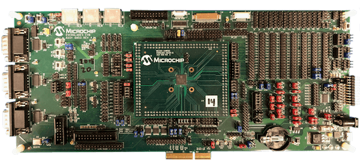
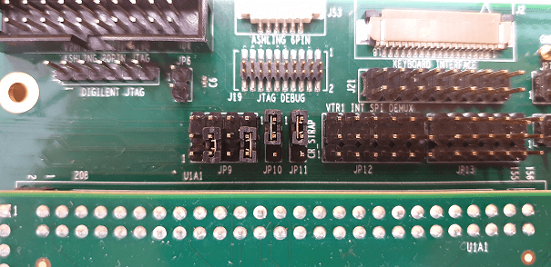
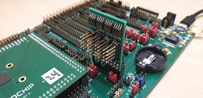
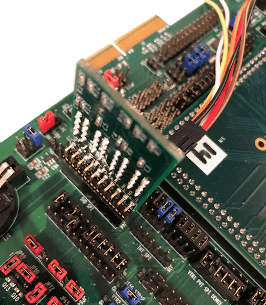
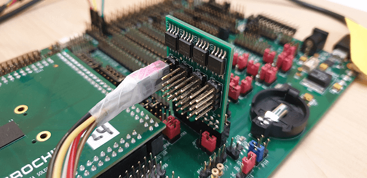
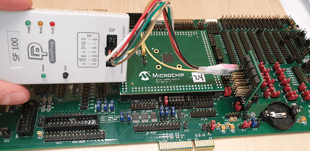
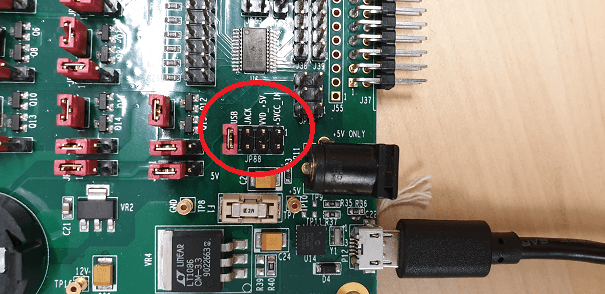
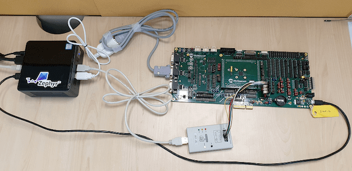
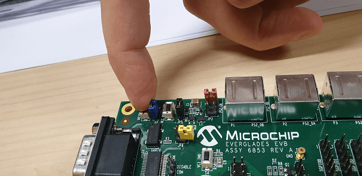

MEC15xxEVB ASSY6853¶
Overview¶
The MEC15xxEVB_ASSY6853 kit is a future development platform to evaluate the Microchip MEC15XX series microcontrollers. This board needs to be mated with part number MEC1501 144WFBA SOLDER DC ASSY 6860(cpu board) in order to operate. The MEC152x has superceded the MEC1501 in production. MEC152x is identical to MEC150x except for an enhanced Boot-ROM SPI loader. The SPI image format has been updated requiring a new SPI image tool. MEC1501 and MEC152x SPI image formats are not compatible with each other. Evaluation and cpu boards are compatible.
{kind=link}
Hardware¶
MEC1521HA0SZ ARM Cortex-M4 Processor
256 KB RAM and 64 KB boot ROM
Keyboard interface
ADC & GPIO headers
UART0, UART1, and UART2
FAN0, FAN1, FAN2 headers
FAN PWM interface
JTAG/SWD, ETM and MCHP Trace ports
PECI interface 3.0
I2C voltage translator
10 SMBUS headers
4 SGPIO headers
VCI interface
5 independent Hardware Driven PS/2 Ports
eSPI header
3 Breathing/Blinking LEDs
2 Sockets for SPI NOR chips
One reset and VCC_PWRDGD pushbuttons
One external PCA9555 I/O port with jumper selectable I2C address.
One external LTC2489 delta-sigma ADC with jumper selectable I2C address.
Board power jumper selectable from +5V 2.1mm/5.5mm barrel connector or USB Micro A connector.
For more information about the SOC’s please see MEC152x Reference Manual 1
Supported Features¶
The mec15xxevb_assy6853 board configuration supports the following hardware features:
Interface |
Controller |
Driver/Component |
|---|---|---|
NVIC |
on-chip |
nested vector interrupt controller |
SYSTICK |
on-chip |
systick |
UART |
on-chip |
serial port |
GPIO |
on-chip |
gpio |
I2C |
on-chip |
i2c |
PINMUX |
on-chip |
pinmux |
PS/2 |
on-chip |
ps2 |
KSCAN |
on-chip |
kscan |
TACH |
on-chip |
tachometer |
Other hardware features are not currently supported by Zephyr (at the moment)
The default configuration can be found in the boards/arm/mec15xxevb_assy6853/mec15xxevb_assy6853_defconfig Kconfig file.
Connections and IOs¶
This evaluation board kit is comprised of the following HW blocks:
MEC15xx EVB ASSY 6853 Rev A MEC15xx EVB Schematic 2
MEC1501 144WFBA SOLDER DC ASSY 6883 with MEC152x silicon MEC1501 Daughter Card Schematic 3
SPI DONGLE ASSY 6791 SPI Dongle Schematic 4
System Clock¶
The MEC1521 MCU is configured to use the 48Mhz internal oscillator with the on-chip PLL to generate a resulting EC clock rate of 12 MHz. See Processor clock control register in chapter 4 “4.0 POWER, CLOCKS, and RESETS” of the data sheet in the references at the end of this document.
Serial Port¶
UART2 is configured for serial logs.
Jumper settings¶
Please follow the jumper settings below to properly demo this board. Advanced users may deviate from this recommendation.
Jumper setting for MEC15xx EVB Assy 6853 Rev A1p0¶
Boot-ROM Straps.¶
These jumpers configure MEC1501 Boot-ROM straps.
JP93 (CMP_STRAP) |
JP11 (CR_STRAP) |
JP46 (VTR2_STRAP) |
JP96 (BSS_STRAP) |
|---|---|---|---|
2-3 |
1-2 |
2-3 |
1-2 |
JP96 1-2 pulls SHD SPI CS0# up to VTR2. MEC1501 Boot-ROM samples
SHD SPI CS0# and if high, it loads code from SHD SPI.
Peripheral Routing Jumpers¶
Each column of the following table illustrates how to enable UART2, SWD, PVT SPI, SHD SPI and LED0-2 respectively.
JP48 (UART2) |
JP9 (UART2) |
JP9 (SWD) |
JP38 (PVT SPI) |
JP98 (SHD SPI) |
JP41 (LED0-2) |
|---|---|---|---|---|---|
1-2 |
2-3 |
2-3 |
2-3 |
1-2 |
|
4-5 |
4-5 |
5-6 |
5-6 |
3-4 |
|
7-8 |
8-9 |
8-9 |
8-9 |
5-6 |
|
10-11 |
10-11 |
11-12 |
11-12 |
||
14-15 |
14-15 |
||||
17-18 |
20-21 |
Note
For UART2 make sure JP39 have jumpers connected 1-2, 3-4.
To receive UART2 serial output, please refer to the picture below to make sure that JP9 configured for UART2 output.
{kind=link}
Jumper settings for MEC1501 144WFBGA Socket DC Assy 6883 Rev B1p0¶
The jumper configuration explained above covers the base board. The ASSY
6883 MEC1501 CPU board provides capability for an optional, external 32KHz
clock source. The card includes a 32KHz crystal oscillator. The card can
also be configured to use an external 50% duty cycle 32KHz source on the
XTAL2/32KHZ_IN pin. Note, firmware must set the MEC15xx clock enable
register to select the external source matching the jumper settings. If
using the MEC15xx internal silicon oscillator then the 32K jumper settings
are don’t cares. JP1 is for scoping test clock outputs. Please refer to
the schematic in reference section below.
Parallel 32KHz crystal configuration¶
JP2 |
JP3 |
|---|---|
1-2 |
2-3 |
External 32KHz 50% duty cycle configuration¶
JP2 |
JP3 |
|---|---|
NC |
1-2 |
Jumper settings for MEC1503 144WFBGA Socket DC Assy 6856 Rev B1p0¶
The MEC1503 ASSY 6856 CPU card does not include an onboard external
32K crystal or oscillator. The one jumper block JP1 is for scoping
test clock outputs not for configuration. Please refer to schematic
in reference section below.
Programming and Debugging¶
Setup¶
If you use Dediprog SF100 programmer, then setup it.
Windows version can be found at the SF100 Product page 8.
Linux version source code can be found at SF100 Linux GitHub 7. Follow the SF100 Linux manual 9 to complete setup of the SF100 programmer. For Linux please make sure that you copied
60-dediprog.rulesfrom theSF100Linuxfolder to the/etc/udev/rules.s(or rules.d) then restart service using:$ udevadm control --reloadAdd directory with program
dpcmd(on Linux) ordpcmd.exe(on Windows) to yourPATH.Clone the MEC152x SPI Image Gen 5 repository or download the files within that directory. For the pre-production MEC150x use MEC150x SPI Image Gen 6 repository.
Make the image generation available for Zephyr, by making the tool searchable by path, or by setting an environment variable
EVERGLADES_SPI_GEN, for example:export EVERGLADES_SPI_GEN=<path to tool>/everglades_spi_gen_RomENote that the tools for Linux and Windows have different file names. For the pre-production MEC1501 SOC use everglades_spi_gen_lin64.
If needed, a custom SPI image configuration file can be specified to override the default one.
export EVERGLADES_SPI_CFG=custom_spi_cfg.txt
Wiring¶
Connect the SPI Dongle ASSY 6791 to
J44in the EVB.Connect programmer to the header J6 on the Assy6791 board, it will flash the SPI NOR chip
U3Make sure that your programmer’s offset is 0x0. For programming you can use Dediprog SF100 or a similar tool for flashing SPI chips.Table 44 Microchip board wiring¶   Note
Remember that SPI MISO/MOSI are swapped on Dediprog headers! Use separate wires to connect Dediprog pins with pins on the Assy6791 SPI board. Wiring connection is described in the table below.
Dediprog Connector
Assy6791 J6 Connector
VCC
1
GND
2
CS
3
CLK
4
MISO
6
MOSI
5
Connect UART2 port of the MEC15xxEVB_ASSY_6853 board to your host computer using the RS232 cable.
Apply power to the board via a micro-USB cable. Configure this option by using a jumper between
JP88 7-8.Final wiring for the board should look like this:

{kind=link}
{kind=link}
{kind=link}
{kind=link}
{kind=link}
{kind=link}
Building¶
Build Hello World application as you would normally do.
The file
spi_image.binwill be created if the build system can find the image generation tool. This binary image can be used to flash the SPI chip.
Flashing¶
Run your favorite terminal program to listen for output. Under Linux the terminal should be
/dev/ttyUSB0. Do not close it.For example:
$ minicom -D /dev/ttyUSB0 -oThe -o option tells minicom not to send the modem initialization string. Connection should be configured as follows:
Speed: 115200
Data: 8 bits
Parity: None
Stop bits: 1
Flash your board using
westfrom the second terminal window. Split first and second terminal windows to view both of them.$ west flashNote
When west process started press Reset button and do not release it till the whole west process will not be finished successfully.
Note
If you dont’t want to press Reset button every time, you can disconnect SPI Dongle ASSY 6791 from the EVB during the west flash programming. Then connect it back to the
J44header and apply power to the EVB. Result will be the same.You should see
"Hello World! mec15xxevb_assy6853"in the first terminal window. If you don’t see this message, press the Reset button and the message should appear.
{kind=link}
Debugging¶
This board comes with a Cortex ETM port which facilitates tracing and debugging using a single physical connection. In addition, it comes with sockets for JTAG only sessions.
Troubleshooting¶
In case you don’t see your application running, please make sure
LED7,LED8, andLED1are lit. If one of these is off, then check the power-related jumpers again.If you can’t program the board using Dediprog, disconnect the Assy6791 from the main board Assy6853 and try again.
If Dediprog can’t detect the onboard flash, press the board’s Reset button and try again.